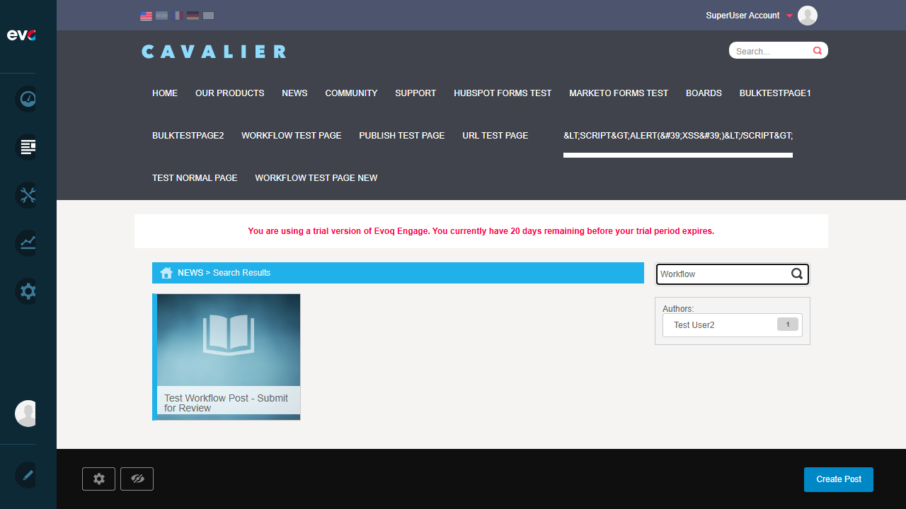
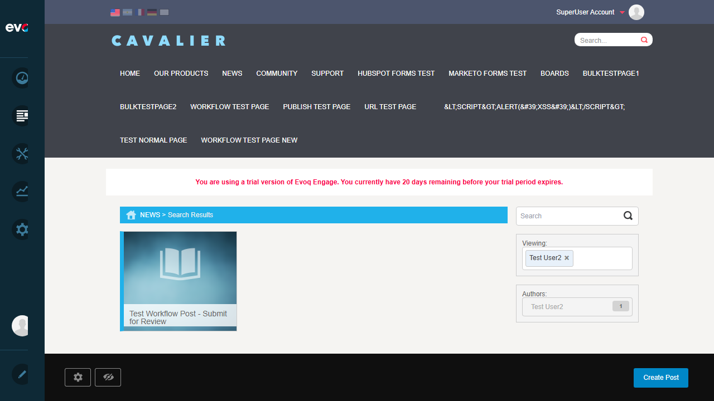
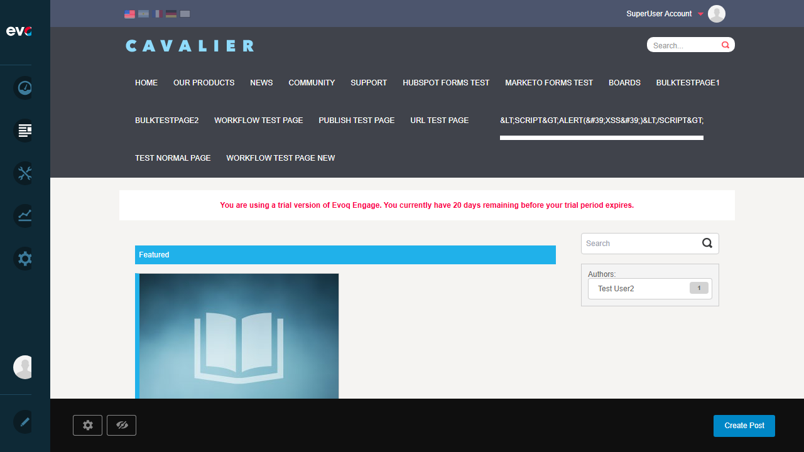
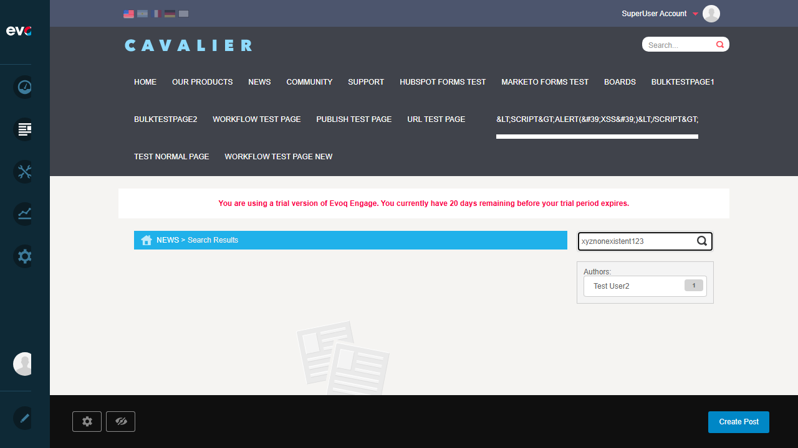
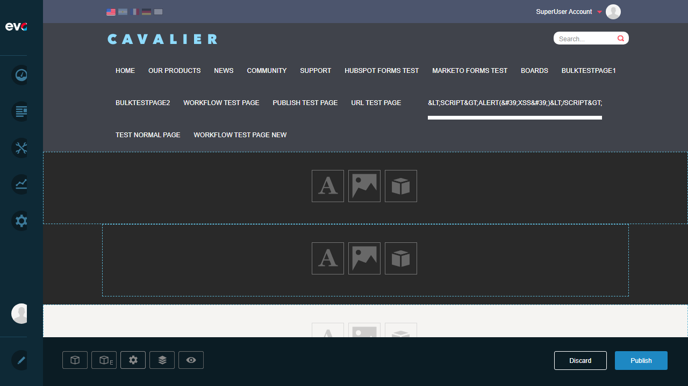

Result: Search successfully returned matching posts. URL updated to ?text=Workflow and "Test Workflow Post - Submit for Review" was displayed.

Search results for keyword "Workflow" showing matching post
Test 3: Filter Posts by Author
PASS
Objective: Verify author filter restricts results to selected author
Steps:
Click on "Test User2" in the Authors filter section
Verify URL changes to include ?author=7
Verify "Viewing:" section appears showing active filter
Verify only posts by Test User2 are shown
Result: Author filter worked correctly. URL updated to ?author=7, "Viewing: Test User2" appeared with remove (x) button, and results were filtered to show only posts by Test User2.

Posts filtered by author "Test User2" with active filter token shown
Test 4: Clear All Filters
PASS
Objective: Verify filters can be cleared and view returns to default state
Steps:
Navigate back to base News URL (http://localhost:8081/en-us/News)
Verify "Viewing:" section is no longer visible
Verify page returns to "Featured" view
Verify all posts are shown without filtering
Result: Navigating to base URL successfully cleared all filters. Page returned to "Featured" view with no "Viewing:" section.

Page returned to default "Featured" view after clearing filters
Test 5: Empty Search Results
PASS
Objective: Verify system handles searches with no results gracefully
Steps:
Enter "xyznonexistent123" in the search box
Press Enter to submit search
Verify search executes without errors
Verify appropriate "no results" message/indicator is shown
Result: Search with non-matching term handled gracefully. URL updated to ?text=xyznonexistent123 and system displayed empty results placeholder image indicating no matching posts.

Empty search results showing placeholder for "xyznonexistent123"
Test 6: Search with Special Characters
PASS
Objective: Verify search handles special characters without errors
Steps:
Enter "<test>&"special'" in the search box
Press Enter to submit search
Verify special characters are properly URL-encoded
Verify search executes without errors or XSS issues
Result: Special characters handled correctly. URL showed proper encoding (?text=%3Ctest%3E%26%22special%27) and search executed without errors. No XSS or injection vulnerabilities observed.

Search with special characters properly encoded and handled
Observations
Tags Filter: Code suggests a "Publisher Tags Filter" module exists (TagsFilterManager.js, FilterController.GetTopTags), but no Tags filter UI element was visible in the tested Publisher instance. Only the "Authors:" filter was displayed. This may require module configuration or may depend on posts having tags assigned.
Date Range Filter: The test scenario mentioned "Filter posts by date range" but no date range filter was visible in the Publisher search/filter UI. This functionality may not be implemented in the front-end or requires different module configuration.
Pagination: Could not test pagination as only 1 published post was available in the system. The pagination functionality exists in code (GetTopTags supports page parameter) but could not be verified via UI.
Sorting: No sorting controls were visible in the Publisher search results. The CardViewManager.js suggests sorting might be available but wasn't accessible in the current UI configuration.
Multiple Filter Combination: Tested search + author filter combination implicitly. Both filters can be applied together via URL parameters.
Search Performance: Search was responsive with minimal delay. Throttling (500ms) is implemented in SearchManager.js for the input field.